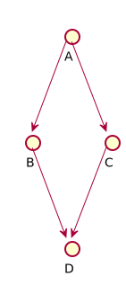
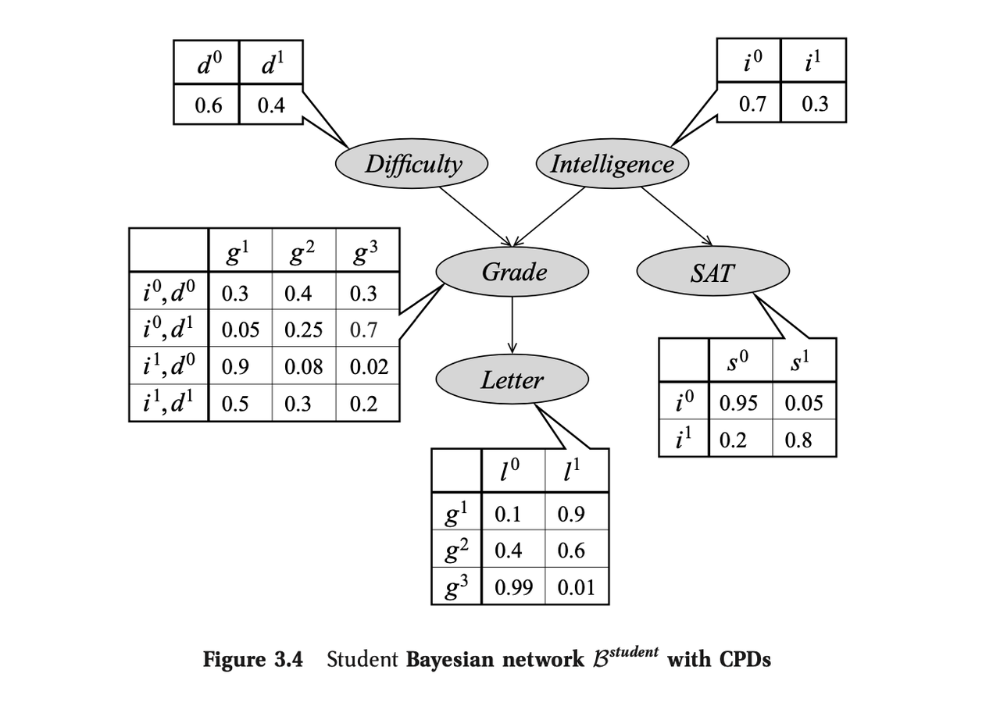
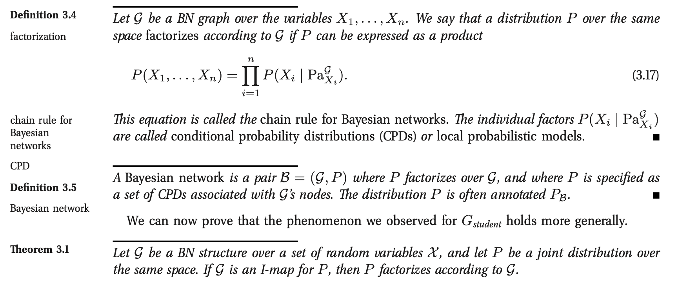
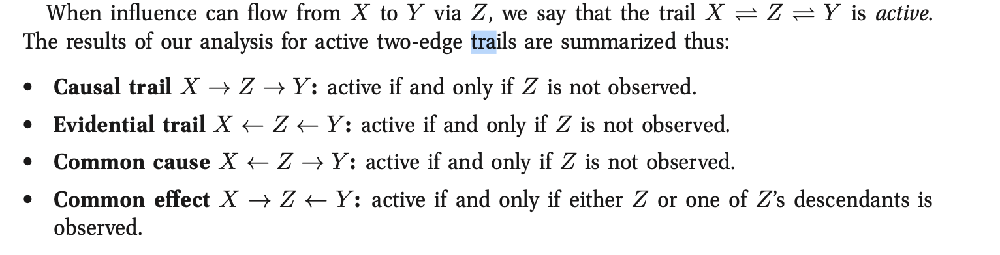
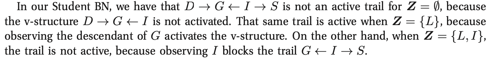
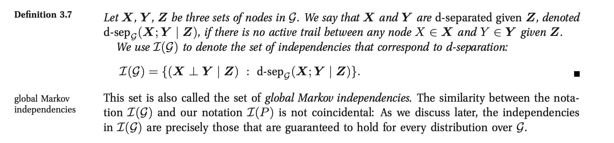

Bayesian Networks
Here are some Notes about the topic of my Master Thesis - Bayesian Networks.
Note that most of these Notes are based on Probabilistic Graphical Models - Principles and Techniques (Koller and Friedman).
Bayesian Networks
The general outlook.
So recall that in general you have three elements in Bayesian Networks:
- Representation
-
how do you represent the joint probability of the events as a network (i.e. as a graph data structure)? Can such structure represent the joint in a compact way due to the conditional independence relations?
Note 1: that such compact formulation is one of the key benefits of Bayesian Networks as it really gives the possibility of shrinking the amount of parameters needed to describe the full joint probability leveraging the independence structure among the RVs.
Note 2: this formulation is transparent, i.e. highly understandable also to non-AI experts. It is so to say highly explainable and in this new buzz of explainable AI a solid option.
-
- Inference
- given some information about some Parent variables, how can I infer/compute the distribution of the children in the Network?
- Learning
- given some observed data, how can I use such information to construct / (infer) / learn the structure of the network?
- given some observed data, how can I learn the parameters of the network? I.e. how can I use the information content of the data to derive some plausible parameterization of the network.
So these are the main tasks you have to deal with in Bayesian Networks. Basically you can do all of the three in a very simple way, which is from a theoretical standpoint very concrete and straightforward or you can start to consider all the aspects of the problem going quickly towards more complex situations.
Representation
As mentioned bayesian networks allow us to express the joint through less parameters.
The idea is that you factorize the joint as a product of the conditionals and given the parameterization of the conditionals you fully specify the joint. Given the independence structures the number of factorization of conditional terms is limited and the overall necessary parameters to specify the joint small.
For instance if a Variable D is fully determined by its parents B, C in this graph
Then you might well understand that given B, C you do not need P(D | A, B, C) parameters as P(D | B, C) suffices.
A concrete example is the following:
Notice there that instead of needing 2 (Diff) * 2 (Int) * 3 (Grade) * 2 (Sat) * 2 (Let) = 48 parameters to describe the joint you simply need 2 + 2 + 12 + 6 = 22.
Given this understanding it is immediate to see that Bayesian Networks are defined as above, i.e. as a graph data structure to which local probabilities are applied. In the specific each RV in the graph is associated with conditional probability distributions (CPD) that specify the distribution given each possible joint assignment of values to its parents. And the graph structure together with the CPD specifies the Bayesian Network.
A second representation/ definition of Bayesian Networks is to define it via a global probability P together with the independence relations determined by the graph.
To determine independence relations in graphs you can use standard logic where the argument is essentially the following:
Our intuition tells us that the parents of a variable “shield” it from probabilistic influence that is causal in nature. In other words, once I know the value of the parents, no information relating directly or indirectly to its parents or other ancestors can influence my beliefs about it. However, information about its descendants can change my beliefs about it, via an evidential reasoning process. (Koller and Friedman)
Such that you would have the following local independence structures:
\[ For each variable X_i : (X_i \perp NonDescendants X_i | Parents X_i) \]
Notice that such set of independence is called an I-map for a probability distribution P. You then say that a graph G is an I-map for P if it satisfies the I-map relations specified I(P).
And you would ultimately have the following definition:
So that you basically take here the opposite direction, from a joint distribution P and the local independence structure you have a fully specified Bayesian Network.
Note that you can go from one representation to the other and the BN is defined if and only if you can from one to the other.
On Graph Dependencies and D-separation
Given the above discussion and the fact that it is possible to determine the BN given a joint density and a Graph structure, the question now is on how to extract the conditional independence structures implied by a graph, i.e. to extract the I-map relations.
In order to do that a simple algorithm exists the d-separation algorithm.
The idea here is the following. You know that for three nodes X, Y, Z there exists a dependence structure between X and Y if one of the following conditions hold:
This is quite intuitive.
It follows now that we can quickly assess whether two variables are generally conditionally independent by making reasonings leveraging the active trails as above.
I.e. for two variables to be dependent there must be an active trail as defined by the conditions above.
Notice that for instance in the student BN you can investigate the conditional independence between SAT and Difficulty as follows:
Generally it holds:
You can then find in the book an algorithm for checking d-separation, if interested at any point in time. Notice that there is are also reasonings about completeness and soundness of d-separation. I.e. how well that covers and fully specifies independence structures of P.
Inference
An important exercise for inference is to query distributions. I.e. as said the task is to compute the probability of the occurrence of some RV given some evidence E, i.e. a subset of RVs that is observed.
So in general the task is to determine:
\[ P (Y | E = e) \]
where Y = query variable and E = evidence.
Given such definition of probability queries it is possible to introduce the first type of query: MAP queries.
\[ MAP (W| e) = \operatorname*{argmax}_w P (w,e)\]
where W = all non-observed RV.
I.e. in MAP queries you are interested in finding the most likely joint assignment of the non-observed variables given the evidence.
If you perform MAP queries for a single RV Y then you are basically computing a probability query for all of the possible realizations y and selecting the most probable one.
Notice that the joint prob. maximizing the likelihood might well differ from the individual RV maximizing realization.
A second type of query is: Marginal MAP Query:
The idea of this is well explained in the book via example.
Imagine you have a class of disease. You want to find the most likely disease given your evidence. Assume that you observe a subset of symptoms E = e. You want to find the MAP assignment of the disease Y.
The issue is now that you have non-observed symptoms: Z.
If you now have a disease that has just a small number of associated symptoms with high probability, and you observe such symptoms, then your MAP query will likely select this realization as most likely.
In reality there might well be a more likely realization - i.e. a different RV that is associated with a lot of symptoms with small probability. The result is that when taking that into account and therefore considering the possible influence of non-observed symptoms the conclusion might be well different.
For this it makes sense to consider marginal MAP that tries in fact to adjust for the presence of the other non-observed RVs influencing the outcome.
\[ marginal MAP (Y | e) = \operatorname*{argmax}_Y \sum_{Z}{P (Y, Z | e)} \]